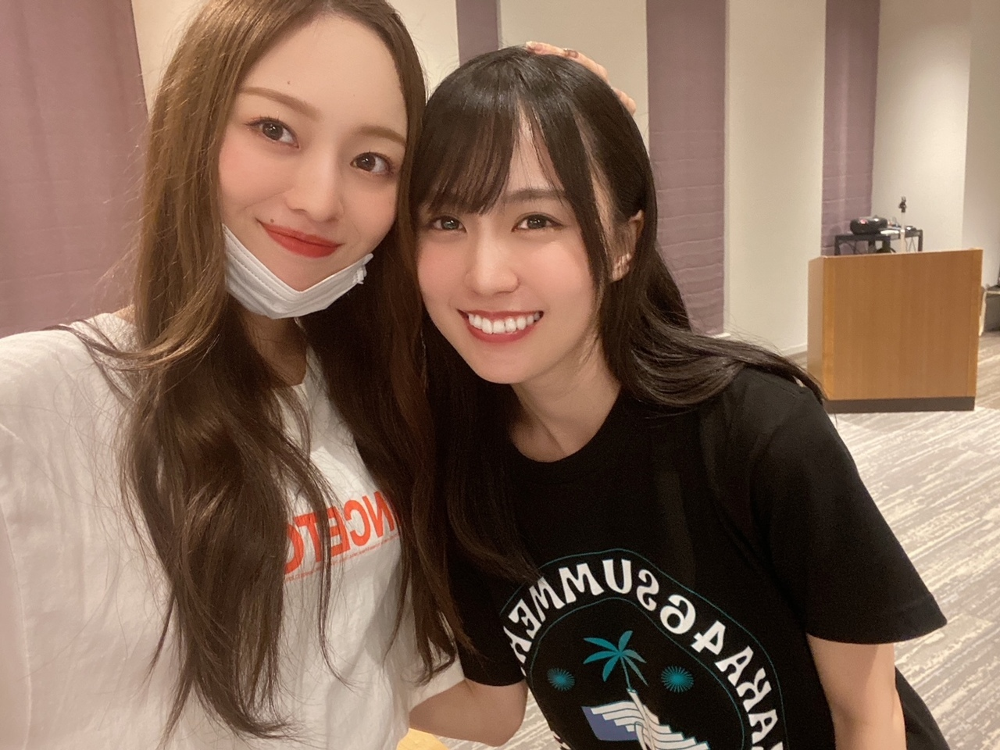
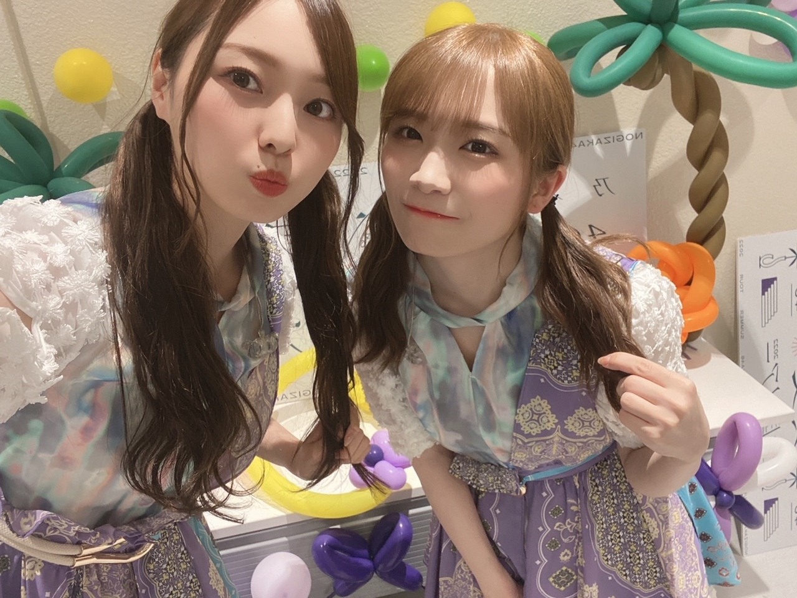
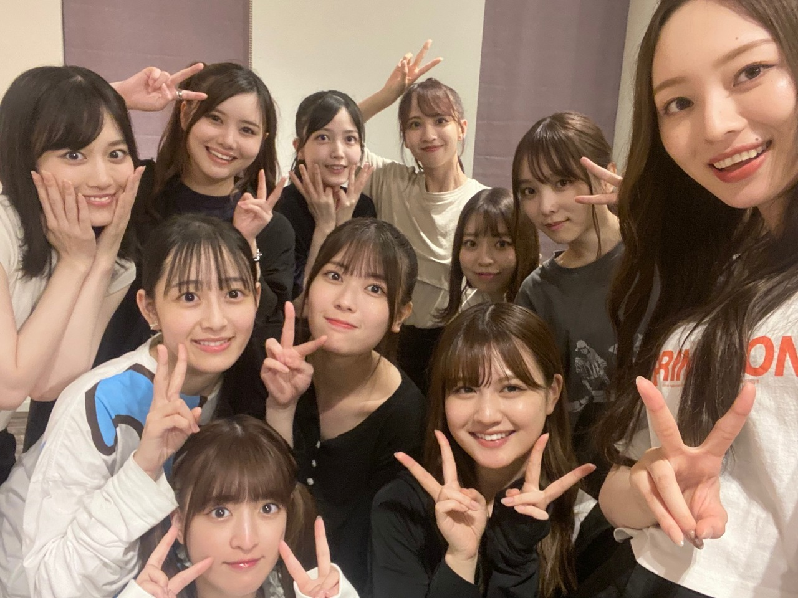
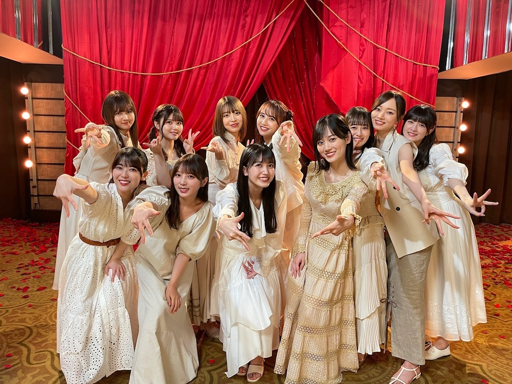

長くなったけど、特別な日なので許してください〜。ありがとうの気持ち！
全国ツアー７都市１５公演、
完走しました！
楽しんでいただけましたか？
３０枚目シングル
「好きというのはロックだぜ！」を引っさげ
全国各地を回らせていただきましたが、
やはり皆様のお顔がしっかり見れるツアーは
とても楽しくて、意思疎通が出来てる気がして
好きです(^^)
これもだいぶ当たり前になりつつありますが
そんな中で 色んなアイテムを使って
わたしたちにアピールしてくれる姿は
とても愛おしくてたまらないです。
行動や目線でも、しっかり伝わるものですよ。
本当にありがとうございます！
とても、楽しかった！
１年で環境はガラッと変わるものなので
去年は〜とか、来年はきっと〜とか、
過去と未来に挟まれながら、
色々考えながら抱えながら挑みましたが。
今が一番(^^)
色んな事がありました。
環境的にも 全てが上手くいくことは
どうしても難しい状況ではあります。
でも、その中でも
支え合いながら、想い合いながら
突っ走った２０２２年、夏でした！

本当にお疲れ様。
そこにいてくれるだけで、いい(^^)
今回のツアーで
４期生の逞しさをすごく感じました。
みんな本当にかっこよかった！
こんな表情するのか…と
モニター越しに心奪われた瞬間ばかり。
きっと、５期生の加入もあって
色んな責任感から 知らぬ間に、着実に、
みんな強くかっこよくなっているんですね。
５期生は そんな先輩たちの背中を見て
育っていくんだなあ。って(^^)
改めまして、
発売中の「好きというのはロックだぜ！」
今シングルも、
よろしくお願いします〜。

3ヶ月前くらいから
ツインおそろいにしましょ〜って約束してて
しちゃいました。てへ
あまりにも好きすぎるので
会う度馴れ馴れしく話しかけちゃうけど
縮まった距離に嬉しくてにやっとしちゃう。
心から尊敬しているし、
こんな女性になりたいなあと、思う。
さて！
本日で、乃木坂46と名乗れるようになった日から
丸６年になりました。
安定を求める時期もあったけど
刺激が欲しくなる日々でもあります。
何かに挑戦したり、恥をかいたり、
まだまだ味わえることが沢山あるはずで、
そんな道が増えることを望んでいる自分がいます。
色んな場所で
言葉を発することが増えましたが、その度
伝えたい気持ち、あのときの感情ってのは
こんなもんじゃないのになあ。と
伝えることの難しさに直面したりも、します。
この世界に入って今日から７年目、
まだまだ学ぶことばかりです。
ただ、明らかに昔の自分とはちがって
何かへ挑む時も、話す時も、
良い意味での 余裕 を持てるようになりました。
私が憧れるのは、余裕のある女性！
まだまだ及びませんが、
どっしり、構えていたい(^^)
昔はね〜、話す言葉をまるまるメモに書いて
暗記しないと話せなかったけど。
今は、箇条書きになりました〜
大きな大きな成長です！

みんなすぐ写真撮りたがる、
だいたい私が手を伸ばして撮る、
集まるともうこれがお決まり
６年経って、みんな
弱さを閉まっておけるようになっていました。
強くてかっこいい、
そしてなにより愛が深い！
深いというより、重すぎるくらい（笑）
６年前と変わらず、今も皆泣き虫だし
弱い所もあるけど、
ちゃんと 想いを言葉にできるようになりました。
奇跡みたいな毎日だから
皆がそれを理解しているから
日に日に愛が増していくのだと 思っています(^^)
出会えて本当に良かったよ、
みんな、６周年おめでとう！！！！！

綺麗な女性だなあ、皆(^^)
今までの皆の活躍に 心からの尊敬と拍手。
これからの活躍も、楽しみ！
７年目になります、
ちょっと 、自分でも驚いています。
なんとなく自分の役目も分かるようになったし、
自分が求められていることも、
すっかり分かるようになりました。
いつしか
いじられ役に徹することも増えたし、
ボケ要員になることも増えました（笑）
日に日に変わっていく私だし
可愛くいられないときも多いかもしれないけど
それでも好きでいてくださり
たくさんの愛をくださり
本当に、心から 感謝しています。
本当に本当にありがとうございます。
成長したいと 強くなりたいと嘆いた日々も
今思えば大切すぎる時間だったし
必要な苦労でした。
だから今そう悩んでいる子には
その今の感情を噛み締めて欲しいと願います。
ともかく、
私は説得力のある人になりたいので、
そのために、自分をしっかり生きます。
当たり前のことを当たり前にやる、
誰にも違和感を持たれないように生きる！
これからの 梅澤美波も
どうか、よろしくお願いします。
では！
また、書きます
Original：https://www.nogizaka46.com/s/n46/diary/detail/100671?ima=4933&cd=MEMBER